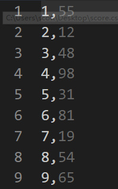
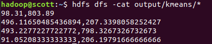

基础MapReduce
问题
班级学生成绩的随机生成
- 输入：本班同学的学号
- 输出：<学号，成绩>
数据准备
首先需要一个
stuID.csv文件，每一列为一个学号：然后将文件放入
HDFS中：hdfs dfs put stuID.csv input

编写程序
import org.apache.hadoop.conf.Configuration;
import org.apache.hadoop.fs.Path;
import org.apache.hadoop.io.IntWritable;
import org.apache.hadoop.io.LongWritable;
import org.apache.hadoop.io.Text;
import org.apache.hadoop.mapreduce.Job;
import org.apache.hadoop.mapreduce.Mapper;
import org.apache.hadoop.mapreduce.Reducer;
import org.apache.hadoop.mapreduce.lib.input.FileInputFormat;
import org.apache.hadoop.mapreduce.lib.output.FileOutputFormat;
import org.apache.hadoop.util.GenericOptionsParser;
import java.io.IOException;
import java.util.Random;
public class Score {
public Score() {
}
public static class StuIDMapper
extends Mapper<Object, Text, LongWritable, IntWritable> {
private final static IntWritable one = new IntWritable(1);
LongWritable ID = new LongWritable();
public void map(Object key, Text value, Context context)
throws IOException, InterruptedException {
ID.set(Long.valueOf(value.toString()));
context.write(this.ID, one);
}
}
public static class ScoreReducer
extends Reducer<LongWritable, IntWritable, LongWritable, IntWritable> {
private IntWritable score = new IntWritable();
private Random rand = new Random();
public void reduce(LongWritable ID, Iterable<IntWritable> values, Context context)
throws IOException, InterruptedException {
score.set(rand.nextInt(100) + 1);
context.write(ID, this.score);
}
}
public static void main(String[] args) throws Exception {
org.apache.hadoop.conf.Configuration conf = new Configuration();
String[] otherArgs = (new GenericOptionsParser(conf, args)).getRemainingArgs();
if (otherArgs.length < 2) {
System.err.println("Usage: wordcount <in>[<in>...] <out>");
System.exit(2);
}
Job job = Job.getInstance(conf, "student score");
job.setJarByClass(Score.class);
job.setMapperClass(Score.StuIDMapper.class);
job.setReducerClass(Score.ScoreReducer.class);
job.setOutputKeyClass(LongWritable.class);
job.setOutputValueClass(IntWritable.class);
for (int i = 0; i < otherArgs.length - 1; i++) {
FileInputFormat.addInputPath(job, new Path(otherArgs[i]));
}
FileOutputFormat.setOutputPath(job, new Path(otherArgs[otherArgs.length - 1]));
System.exit(job.waitForCompletion(true) ? 0 : 1);
}
}
- 这里需要注意随机数的生成
new Random() - 同时，由于学号比较长，必须用
LongWritable类型输入
运行
hadoop jar Score.jar input/stuID.csv output
hdfs dfs -ls output/*
分组MapReduce
问题
求平均成绩：将全班同学每隔5号分为一组，求每组的平均成绩
输入： <学号，成绩>
输出：<组号，平均分>
数据准备
首先需要一个
score.csv文件，每一列为学号和学生成绩：- 
然后将文件放入
HDFS中：hdfs dfs put score.csv input
编写程序
import org.apache.hadoop.conf.Configuration;
import org.apache.hadoop.fs.Path;
import org.apache.hadoop.io.FloatWritable;
import org.apache.hadoop.io.IntWritable;
import org.apache.hadoop.io.LongWritable;
import org.apache.hadoop.io.Text;
import org.apache.hadoop.mapreduce.Job;
import org.apache.hadoop.mapreduce.Mapper;
import org.apache.hadoop.mapreduce.Partitioner;
import org.apache.hadoop.mapreduce.Reducer;
import org.apache.hadoop.mapreduce.lib.input.FileInputFormat;
import org.apache.hadoop.mapreduce.lib.input.KeyValueLineRecordReader;
import org.apache.hadoop.mapreduce.lib.input.KeyValueTextInputFormat;
import org.apache.hadoop.mapreduce.lib.output.FileOutputFormat;
import org.apache.hadoop.util.GenericOptionsParser;
import java.io.IOException;
import java.util.Random;
public class GetAvgScore {
public GetAvgScore() {
}
public static class StuScoreMapper
extends Mapper<Text, Text, IntWritable, IntWritable> {
IntWritable Group = new IntWritable();
IntWritable Score = new IntWritable();
public void map(Text key, Text value, Context context)
throws IOException, InterruptedException {
// every 5 students as a group,[1,2,3,4,5] => group1
Group.set((Integer.parseInt(key.toString()) - 1) / 5 + 1);
Score.set(Integer.parseInt(value.toString()));
context.write(this.Group, this.Score);
}
}
public static class AvgScoreReducer
extends Reducer<IntWritable, IntWritable, IntWritable, FloatWritable> {
private FloatWritable avgscore = new FloatWritable();
public void reduce(IntWritable Group, Iterable<IntWritable> Score, Context context)
throws IOException, InterruptedException {
int sum = 0;
int count = 0;
for (IntWritable val : Score) {
sum += val.get();
count++;
}
avgscore.set((float) sum / count);
context.write(Group, avgscore);
}
}
public static void main(String[] args) throws Exception {
org.apache.hadoop.conf.Configuration conf = new Configuration();
// set seperator
conf.set(KeyValueLineRecordReader.KEY_VALUE_SEPERATOR, ",");
String[] otherArgs = (new GenericOptionsParser(conf, args)).getRemainingArgs();
if (otherArgs.length < 2) {
System.err.println("Usage: wordcount <in>[<in>...] <out>");
System.exit(2);
}
Job job = Job.getInstance(conf, "student avg score");
job.setInputFormatClass(KeyValueTextInputFormat.class);
job.setJarByClass(GetAvgScore.class);
job.setMapperClass(GetAvgScore.StuScoreMapper.class);
job.setReducerClass(GetAvgScore.AvgScoreReducer.class);
job.setMapOutputKeyClass(IntWritable.class);
job.setMapOutputValueClass(IntWritable.class);
job.setOutputKeyClass(IntWritable.class);
job.setOutputValueClass(FloatWritable.class);
for (int i = 0; i < otherArgs.length - 1; i++) {
FileInputFormat.addInputPath(job, new Path(otherArgs[i]));
}
FileOutputFormat.setOutputPath(job, new Path(otherArgs[otherArgs.length - 1]));
System.exit(job.waitForCompletion(true) ? 0 : 1);
}
}
这里需要注意，使用KeyValueTextInputFormat代替了默认的TextInputFormat，在进入mapper前就对数据进行了分割处理。
同时，在map过程中，将每个key（学生的学号）得到对应的组，作为key传入reduce中计算。
这里需要注意，必须指明map的输出类型：job.setOutputKeyClass
运行
hadoop jar avgcore.jar input/score.csv output/avgscore/
hdfs dfs -cat output/avgscore/*
结果为：
hadoop jar Natural\ join.jar input/person.txt input/address.txt output/natural_join
自然连接（natural join）
数据准备
有两个文件
person.txt
1 Aaron 210000
2 Abbott 214000 3 Abel 221000 4 Abner 215000 5 Abraham 226000 6 Adair 225300 7 Adam 223800 8 Addison 224000 9 Adolph 223001
address.txt
210000 Nanjing 214000 Wuxi 221000 Xuzhou 213000 Changzhou
要求以code为连接属性，匹配出person中每个人所在的位置信息；每条记录各个字段之间以空格为分隔符。
编写程序
import org.apache.commons.lang.StringUtils;
import org.apache.hadoop.conf.Configuration;
import org.apache.hadoop.fs.Path;
import org.apache.hadoop.io.Text;
import org.apache.hadoop.mapreduce.Job;
import org.apache.hadoop.mapreduce.Mapper;
import org.apache.hadoop.mapreduce.Reducer;
import org.apache.hadoop.mapreduce.lib.input.FileInputFormat;
import org.apache.hadoop.mapreduce.lib.input.FileSplit;
import org.apache.hadoop.mapreduce.lib.output.FileOutputFormat;
import org.apache.hadoop.util.GenericOptionsParser;
import java.io.IOException;
import java.util.ArrayList;
import java.util.List;
public class natural_join {
public natural_join() {
}
public static class joinMapper
extends Mapper<Object, Text, Text, Text> {
private static final String PERSON_FLAG = "person";
private static final String ADDRESS_FLAG = "address";
private FileSplit fileSplit;
private Text outKey = new Text();
private Text outValue = new Text();
public void map(Object key, Text value, Context context)
throws IOException, InterruptedException {
fileSplit = (FileSplit) context.getInputSplit();
String filePath = fileSplit.getPath().toString();
String line = value.toString();
String[] fields = StringUtils.split(line, " ");
// 判断记录来自哪个文件
if (filePath.contains(PERSON_FLAG)) {
if (fields.length < 3)
return;
// fields[2] is code
outKey.set(fields[2]);
outValue.set(PERSON_FLAG + "," + line);
} else if (filePath.contains(ADDRESS_FLAG)) {
// fields[0] is city code
outKey.set(fields[0]);
outValue.set(ADDRESS_FLAG + "," + fields[1]);
}
context.write(outKey, outValue);
}
}
public static class joinReducer
extends Reducer<Text, Text, Text, Text> {
private static final String PERSON_FLAG = "person";
private static final String ADDRESS_FLAG = "address";
private String fileFlag = null;
private String cityName = null;
private Text outCity = new Text();
private Text outPerson = new Text();
public void reduce(Text key, Iterable<Text> values, Context context)
throws IOException, InterruptedException {
List<String> perosonInfo = new ArrayList<>();
for (Text val : values) {
String[] fields = StringUtils.split(val.toString(), ",");
fileFlag = fields[0];
// choose what file it is
if (fileFlag.equals(ADDRESS_FLAG)) {
cityName = fields[1];
outCity.set(cityName);
} else if (fileFlag.equals(PERSON_FLAG)) {
perosonInfo.add(fields[1]);
}
}
// Cartesian product
for (String person : perosonInfo) {
outPerson.set(person);
context.write(outPerson, outCity);
}
}
}
public static void main(String[] args) throws Exception {
org.apache.hadoop.conf.Configuration conf = new Configuration();
conf.set("mapreduce.output.textoutputformat.separator", " ");
String[] otherArgs = (new GenericOptionsParser(conf, args)).getRemainingArgs();
if (otherArgs.length <= 2) {
System.err.println("Usage: natural <in> <in> <out>");
System.exit(2);
}
Job job = Job.getInstance(conf, "natural join");
job.setJarByClass(natural_join.class);
job.setMapperClass(natural_join.joinMapper.class);
job.setReducerClass(natural_join.joinReducer.class);
job.setOutputKeyClass(Text.class);
job.setOutputValueClass(Text.class);
for (int i = 0; i < otherArgs.length - 1; i++) {
FileInputFormat.addInputPath(job, new Path(otherArgs[i]));
}
FileOutputFormat.setOutputPath(job, new Path(otherArgs[otherArgs.length - 1]));
System.exit(job.waitForCompletion(true) ? 0 : 1);
}
}
程序逻辑主要是以code作为key进行reduce，将文件来源信息放入value中，使用笛卡尔积进行匹配。
这里需要注意一点的是，person中的code可能是缺省的，因此不能进行匹配！
同时，需要注意Reducer定义的perosonInfo，只能在类里面定义，不能定义成类成员变量。
运行
hadoop jar Natural\ join.jar input/person.txt input/address.txt output/natural_join
hdfs dfs -cat output/natural_join/*
Kmeans实现
数据准备
输入数据（k-means.dat）：
4,400 96,826 606,776 474,866 400,768 2,920 356,766 36,687 -26,824
- 第一行标明K的值和数据个数N, 均为整形, 由","隔开 (如 3,10 表示K=3, N=10)。
- 之后N行中每行代表一个二维向量, 向量元素均为整形, 由","隔开 (如 1,2 表示向量(1, 2))。
输出: K行, 每行是一个聚类图心的二维向量, 向量元素均为浮点型 (如 1.1,2.3)。
编程思路
- 首先需要初始化中心点，这里使用前四行作为初始中心点，现将其写入
cache中。 - 每次
map时使用setup函数读入变量中，依据所有点与中心店的距离选择其属于的类。 - 在
reduce中，根据类别进行分组，对每组聚类重新选择中心点，将中心点输出到目标文件中。 - 判断两次的中心点是否满足阈值条件，若不满足，则将新生成的中心点移动到
cache中，作为下一次迭代的中心点。 - 迭代结束的标志为：满足最大迭代次数或满足阈值条件。
Point类
由于我们要对点进行操作，更方便的方法是先新建一个Point类：
class Point{
double x;
double y;
Point(){
}
Point(double x,double y){
this.x=x;
this.y=y;
}
public double EuclideanDis(Point other) {
double distance = 0;
distance = Math.pow((this.x - other.getX()),2) + Math.pow((this.y - other.getY()),2);
return Math.sqrt(distance);
}
public double getX()
{
return x;
}
public double getY(){
return y;
}
}
kmeansMapper
这里使用Distribution cache将小文件（中心点）广播出去，避免了大量的数据移动。
注意，在使用Hadoop2.7.3中，只能使用旧的Distribution cacheAPI，新的API会报错：
String localCacheFiles = context.getLocalCacheFiles()[0].getName();
BufferedReader br = new BufferedReader(new FileReader(localCacheFiles));
Mapper程序为：
import org.apache.commons.lang.StringUtils;
import org.apache.hadoop.conf.Configuration;
import org.apache.hadoop.fs.FSDataInputStream;
import org.apache.hadoop.fs.FileSystem;
import org.apache.hadoop.fs.Path;
import org.apache.hadoop.io.IntWritable;
import org.apache.hadoop.io.LongWritable;
import org.apache.hadoop.io.Text;
import org.apache.hadoop.mapreduce.Mapper;
import java.io.BufferedReader;
import java.io.FileReader;
import java.io.IOException;
import java.io.InputStreamReader;
import java.net.URI;
import java.util.ArrayList;
import java.util.List;
public class kmeansMapper extends Mapper<LongWritable, Text, IntWritable, Text> {
private List<Point> means;
/**
* reading the data from the distributed cache
*/
public void setup(Context context) throws IOException, InterruptedException {
means = new ArrayList<Point>();
//
// URI[] cacheFiles = context.getCacheFiles();
// BufferedReader br = new BufferedReader(new FileReader(cacheFiles[0].toString()));
Configuration conf = new Configuration();
FileSystem fs = FileSystem.get(conf);
FSDataInputStream hdfsInStream = fs.open(new Path("output/cache/part-r-00000"));
InputStreamReader isr = new InputStreamReader(hdfsInStream, "utf-8");
BufferedReader br = new BufferedReader(isr);
String lineString = null;
while((lineString = br.readLine()) != null){
String[] keyValue = StringUtils.split(lineString,",");
Point tmpCluster = new Point(Double.parseDouble(keyValue[0]),Double.parseDouble(keyValue[1]));
means.add(tmpCluster);
}
br.close();
}
public void map(LongWritable key, Text keyvalue, Context context) throws IOException, InterruptedException{
// ignore first line
if (key.get() == 0)
return;
String[] keyValue = StringUtils.split(keyvalue.toString(),",");
String X = keyValue[0];
String Y = keyValue[1];
Point tmpPoint = new Point(Double.parseDouble(X),Double.parseDouble(Y));
context.write(new IntWritable(findClosest(tmpPoint)), new Text(X + "," + Y));
}
/**
* method that returns the closest mean from the point
* @param value
* @return
*/
private int findClosest(Point value){
int argmin = 0;
double minimalDistance = Double.MAX_VALUE ;
for(int i = 0; i<means.size(); i++){
Point tmpCluster = means.get(i);
double distance = value.EuclideanDis(tmpCluster);
if(distance < minimalDistance){
minimalDistance = distance;
argmin = i;
}
}
return argmin;
}
}
kmeansReducer
import org.apache.commons.lang.StringUtils;
import org.apache.hadoop.io.DoubleWritable;
import org.apache.hadoop.io.IntWritable;
import org.apache.hadoop.io.Text;
import org.apache.hadoop.mapreduce.Reducer;
import java.io.IOException;
public class kmeansReducer extends Reducer<IntWritable, Text, DoubleWritable, DoubleWritable> {
public void reduce(IntWritable key, Iterable<Text> values, Context context) throws IOException,
InterruptedException{
double sumX = 0.0;
double sumY = 0.0;
int count = 0;
for(Text value : values){
String[] keyValue = StringUtils.split(value.toString(),",");
sumX += Double.parseDouble(keyValue[0]);
sumY += Double.parseDouble(keyValue[1]);
count ++;
}
context.write(new DoubleWritable(sumX/count), new DoubleWritable(sumY/count));
}
}
kmeansMain
这里需要注意的是，我们知道每次MapReduce生成的文件后缀为part-r-00000，因此需要指定文件名进行移动。
同时，需要注意在读写文件时，需要指定编码格式为UTF-8
import org.apache.commons.lang.StringUtils;
import org.apache.hadoop.conf.Configuration;
import org.apache.hadoop.fs.FSDataInputStream;
import org.apache.hadoop.fs.FSDataOutputStream;
import org.apache.hadoop.fs.FileSystem;
import org.apache.hadoop.fs.Path;
import org.apache.hadoop.io.DoubleWritable;
import org.apache.hadoop.io.IntWritable;
import org.apache.hadoop.io.Text;
import org.apache.hadoop.mapreduce.lib.input.FileInputFormat;
import org.apache.hadoop.mapreduce.lib.output.FileOutputFormat;
import org.apache.hadoop.mapreduce.Job;
import org.apache.hadoop.util.GenericOptionsParser;
import java.io.BufferedReader;
import java.io.IOException;
import java.io.InputStreamReader;
import java.net.URI;
import java.net.URISyntaxException;
public class kmeansMain {
private static final String CACHED_PATH = "output/cache";
private static final String ACTUAL_PATH = "output/means";
// directory store acutal result
private static final String CACHED_MEANS = "output/cache/part-r-00000";
private static final String ACTUAL_MEANS = "output/means/part-r-00000";
public static void writeFileByline(String dst, String contents) throws IOException{
Configuration conf = new Configuration();
Path dstPath = new Path(dst);
FileSystem fs = dstPath.getFileSystem(conf);
FSDataOutputStream outputStream = null;
if (!fs.exists(dstPath)) {
outputStream = fs.create(dstPath);
}else{
outputStream = fs.append(dstPath);
}
contents = contents + "\n";
outputStream.write(contents.getBytes("utf-8"));
outputStream.close();
}
public static int readFileByLines(String fileName,String meansPath) throws IOException {
Configuration conf = new Configuration();
FileSystem fs = FileSystem.get(URI.create(fileName), conf);
FSDataInputStream hdfsInStream = fs.open(new Path(fileName));
InputStreamReader isr = new InputStreamReader(hdfsInStream, "utf-8");
BufferedReader br = new BufferedReader(isr);
// get first line k
String line = br.readLine();
int k = Integer.parseInt(StringUtils.split(line, ",")[0]);
int count = 0;
while ((line = br.readLine()) != null && count < k) {
writeFileByline(meansPath, line);
count++;
}
return k;
}
public static void main(String[] args) throws IOException,
InterruptedException, ClassNotFoundException, URISyntaxException {
Configuration conf = new Configuration();
String[] otherArgs = (new GenericOptionsParser(conf, args)).getRemainingArgs();
if (otherArgs.length < 2) {
System.err.println("Usage: kmeans <in> <out>");
System.exit(2);
}
int code = 0;
Path inputPath = new Path(otherArgs[0]);
Path outputDir = new Path(otherArgs[1] + "");
Path cacheMeansPath = new Path(CACHED_MEANS);
Path actualMeansPath = new Path(ACTUAL_MEANS);
Path cachePath = new Path(CACHED_PATH);
Path actualPath = new Path(ACTUAL_PATH);
int k = readFileByLines(otherArgs[0],ACTUAL_MEANS);
int maxIterations = 500;
double threshold = 0.000001;
// Delete output if exists
FileSystem hdfs = FileSystem.get(conf);
if (hdfs.exists(outputDir))
hdfs.delete(outputDir, true); // recursive delete
boolean changed = false;
int counter = 0;
while(!changed && counter < maxIterations){
// Delete output if exists
if (hdfs.exists(cachePath))
hdfs.delete(cachePath, true);
//moving the previous iteration file to the cache directory
hdfs.rename(actualPath, cachePath);
conf.set("threshold", threshold+"");
//passing K to the map reduce as a parameter
conf.set("k", k+"");
conf.set("mapreduce.output.textoutputformat.separator", ",");
Job kmeans = Job.getInstance(conf, "Kmeans "+ (counter + ""));
// add cache
kmeans.addCacheFile(cacheMeansPath.toUri());
kmeans.setJarByClass(kmeansMapper.class);
FileInputFormat.addInputPath(kmeans, inputPath);
// set out put path : output/means
FileOutputFormat.setOutputPath(kmeans, actualPath);
kmeans.setMapperClass(kmeansMapper.class);
kmeans.setMapOutputKeyClass(IntWritable.class);
kmeans.setMapOutputValueClass(Text.class);
kmeans.setReducerClass(kmeansReducer.class);
kmeans.setOutputKeyClass(DoubleWritable.class);
kmeans.setOutputValueClass(DoubleWritable.class);
// Execute job
code = kmeans.waitForCompletion(true) ? 0 : 1;
//checking if the mean is stable
BufferedReader file1Reader = new BufferedReader(new InputStreamReader(hdfs.open(cacheMeansPath)));
BufferedReader file2Reader = new BufferedReader(new InputStreamReader(hdfs.open(actualMeansPath)));
for(int i = 0; i<k; i++){
String[] keyValue1 = file1Reader.readLine().split(",");
String[] keyValue2 = file2Reader.readLine().split(",");
Point p1 = new Point(Double.parseDouble(keyValue1[0]),Double.parseDouble(keyValue1[1]));
Point p2 = new Point(Double.parseDouble(keyValue2[0]),Double.parseDouble(keyValue2[1]));
if(p1.EuclideanDis(p2) <= threshold){
changed = true;
}else{
changed = false;
break;
}
}
file1Reader.close();
file2Reader.close();
counter++;
System.out.println("KMEANS finished iteration:>> "+counter + " || means stable: "+ changed);
}
hdfs.rename(actualPath, outputDir);
System.exit(code);
}
}
运行
同样的方法，打包成JAR包运行，
hadoop jar Kmeans.jar input/k-means.dat output/kmeans
结果为：
说明只用了8次迭代就达到稳定状态了。
查看运行结果，也就是中心点：
hdfs dfs -cat output/kmeans/*
